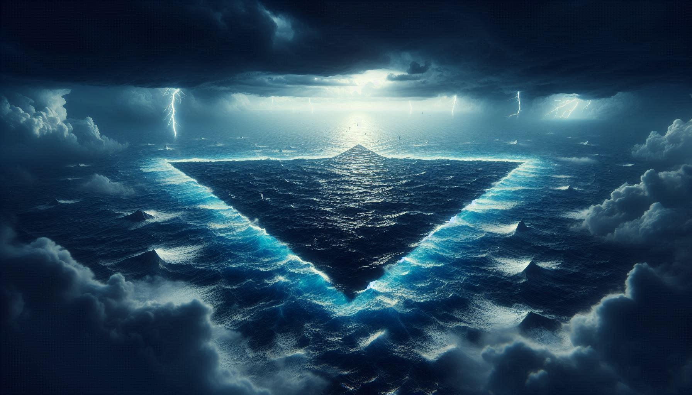
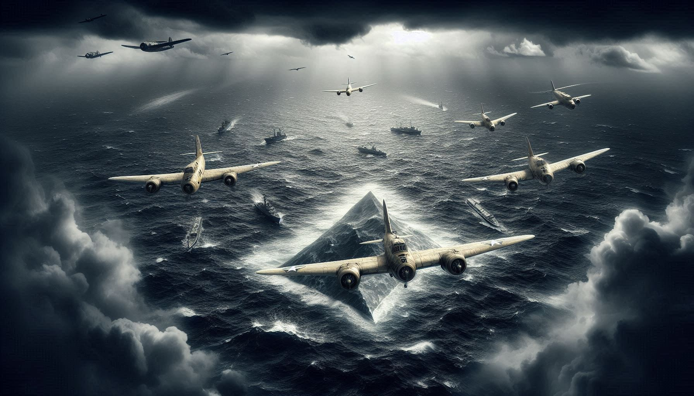

DEATH TRAP OR NATURAL PHENOMENON?

North Atlantic Ocean-ile Florida, Bermuda, pinne Puerto Rico enniva connect cheyyunna oru imaginary triangle aanu Bermuda Triangle. Ithine "Devil's Triangle" ennum parayunnu. Over 100 years aayi pala shipsum planesum ivide disappear aayittundennu karuthappedunnu.
Ithuvare 50-ol ships and 20-ol planes ivide tholanjittund. Notable cases:
| INCIDENT | YEAR | DESCRIPTION |
|---|---|---|
| Flight 19 | 1945 | 5 US Navy bombers missing. Search plane-um tholangu. |
| USS Cyclops | 1918 | 300+ people ulla giant ship. Trace polum illathe missing. |
| Carroll A. Deering | 1921 | Ship kitti, pakshe crew members ellam disappear aayi! |
Supernatural karunangalude idayil chila scientific facts-um undu:
👉 Methane Gas Hydrates: Ocean floor-il ninnu methane gas bubbles valiyathayi purathu varumpol, athu vellathinte density kuraykkum. Ithu kaaranam ships sudden aayi sink cheyyam.
👉 The Gulf Stream: Ithu oru powerful "river" within the ocean aanu. Ividethe strong currents engine poya ships-ine minutes-ukalkkullil miles doorathekku kondopokum.
👉 Hexagonal Clouds: Chila satellite images-il 170mph speed-il veesham kazhiyulla air bombs undakkunna clouds ivide kaanam.

Science-inu purame ulla theories:
Sathyathil, Insurance company-ukalum (Lloyd’s of London) US Coast Guard-um parayunnath Bermuda Triangle world-ile mattu ocean areas-inekkal dangerous alla ennanu.
Bermuda Triangle pole thanne Japan-u aduthu "Dragon's Triangle" (Ma-no Umi) enna oru place undu. Ividethe stories-um similar aanu—missing ships and strange lights. Ithu kaattunnath nature-inu pala unpredictable behaviors undennu mathramaanu.
Bermuda Triangle oru supernatural ghost area alla, pakshe Nature's Power and Human Error mix aayirikkum reality. Ennalum, aa 5 planes-inte (Flight 19) fate ippozhum oru mystery aayi thanne thudarunnu.